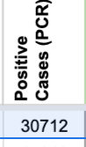
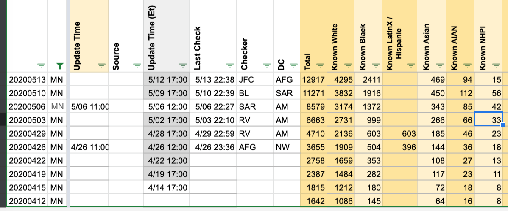

| Date | Number | Title |
|---|---|---|
| September 18, 2020, 6:38 AM PDT | 845 | [MN] Specimen timeseries reflects encounters |
| July 31, 2020, 9:14 AM PDT | 714 | [MN] Updating Total Tests and Negatives |
| July 30, 2020, 7:54 AM PDT | 704 | [MN] Historical Cases |
| July 6, 2020, 12:34 PM PDT | 580 | [MN] Minnesota recovered number was wrong on 7/5 |
| June 27, 2020, 5:42 PM PDT | 553 | [MN Historicals] Data since May increasingly differs from official. |
| June 26, 2020, 7:20 AM PDT | 551 | MN - Remove "Total PCR Tests (People)" data from 2020-05-13 through 2020-05-30 |
| June 26, 2020, 6:34 AM PDT | 544 | MN - Missing Positive Cases (PCR) for 2020-06-05 |
| June 13, 2020, 6:36 PM PDT | 492 | MN Data, 6/13 |
| June 9, 2020, 7:10 PM PDT | 484 | [MN Historicals] MN switched their test reporting from people to tests on 6/5 |
| June 5, 2020, 3:36 PM PDT | 475 | MN changed test numbers to per-test from per-person |
| May 12, 2020, 2:41 PM PDT | 414 | MN "recovered" numbers include deaths |
| May 9, 2020, 7:34 AM PDT | 397 | MN NHPI Data is way off |
#845: [MN] Specimen timeseries reflects encounters
Issue number 845
karaschechtman opened this issue on September 18, 2020, 6:38 AM PDT
Labels Data quality
State or US: MN
Describe the problem Per state health department outreach, MN's Total Tests (PCR) timeseries reflects encounters, not specimens. We should move that timeseries to Total Test Encounters (PCR).
Link to data source Our historical specimens timeseries.
Comments
Worksheet2 Before
 Worksheet2 After
Worksheet2 After

#714: [MN] Updating Total Tests and Negatives
Issue number 714
jesseandersonumd opened this issue on July 31, 2020, 9:14 AM PDT
Labels Data quality Historical Data stale
State: MN
Dates impacted: 7/30
Issue: We are adding a new value for total tests, using "total approximate number of people tested" instead of "total approximate number of completed tests". This change is also reflected in updating total negatives. Total Tests (PCR) will go down roughly 200k as will negatives.
Comments
STATES DAILY:
This issue has been automatically marked as stale because it has not had recent activity. It will be closed if no further activity occurs. Thank you for your contributions!
This issue has been closed because it was stale for 15 days, and there was no further activity on it for 10 days. You can feel free to re-open it if the issue is important, and label it as "not stale."
#704: [MN] Historical Cases
Issue number 704
jesseandersonumd opened this issue on July 30, 2020, 7:54 AM PDT
Labels Backfill Historical Data
State: MN
Issue in brief: Prior to 6/14, we reported separate values for positive cases (PCR) and positive cases (people, probable+confirmed) even though we currently treat the positive cases values that MN reports as lab-confirmed only. It is unclear whether we can simply copy over the values pre-6/14 located in the positive cases (people, probable+confirmed) to the positive cases (PCR) column so that they are identical. Currently, we only have positive cases (PCR) going back to 2020/04/29 in the States Daily sheet, while positive cases (people, confirmed + probable) goes back to 2020/03/06.
Image showing the change on 6/14:

Image showing when we started reporting positive cases (PCR) values:

Comments
This was a mistake in a backfill on 6/14...I updated Positives without also noticing I should also update Positive Cases (PCR).
Data in Positives pre-6/14 has been copied over to Positive Cases (PCR). If we ever need to restore the old values, they are in the original Positives column of the 6/14 [backfill analysis sheet](https://docs.google.com/spreadsheets/d/1Y0ZtCoyZHOf_p0X12msYe9oKI6L38UgnGZHN8JddOHU/edit#gid=1869230983.:
#580: [MN] Minnesota recovered number was wrong on 7/5
Issue number 580
muamichali opened this issue on July 6, 2020, 12:34 PM PDT
Labels Data quality
State or US: MN
Describe the problem Minnesota temporarily published an erroneous number for recovered on 7/5
Link to data source
Provide links to original data sources that we can refer to, like a state COVID website.

Comments
BEFORE
AFTER
#553: [MN Historicals] Data since May increasingly differs from official.
Issue number 553
Minibadger opened this issue on June 27, 2020, 5:42 PM PDT
Labels stale
Minnesota has gradually changed its reporting methods since roughly May 1st to putting interim data in its data tables and updating it as the data is confirmed. They also have changed positive results to representing the date collected. As a result, the data in the COVID Tracking Project since that date almost always disagrees at least a little bit with the official figures, and in some cases is wildly wrong, for example the numbers reported June 15-16:
COVID Tracking Project June 13: 9658 tested, 2 positive, 9 deaths June 14: 0 tested, 6 positive, 15 deaths
MN Department of Health (https://www.health.state.mn.us/diseases/coronavirus/situation.html#testing, https://www.health.state.mn.us/diseases/coronavirus/situation.html#cases) June 13: 9802 tested, 153 positive, 9 deaths June 14: 5019 tested, 148 positive, 15 deaths
To correct this, an update to the data tables is needed, and a new method of adding daily results needs to be used:
- Use the Testing and Cases data tables from the Department of Health to overwrite current historical data for testing and cases and test totals, excepting the previous 7 days before the current date.
- Each day, update the most recent week's data for cases and tests (total and daily) from the revised data tables on the Minnesota Department of Health site.
- Get the most recent data from the "daily update" at the top of the page after 11am CST and the Testing Data table or working backward from the day-over-day cumulative total.
I understand this is rather laborious. I'll help any way I can.
Comments
Thanks for reporting this issue @Minibadger. Unfortunately the way MN makes its updates and the way we collect data cause these problems. The day with zero positives you mention, June 14th, is an artifact of a previous historical update: https://github.com/COVID19Tracking/issues/issues/484 As part of that issue, we manually synchronized with MN's case history as it was reported at that time. Since then (a) recent data has drifted out of sync as they continuously revise past days and (b) we once again became a day offset from them because we capture numbers in the afternoon when they are reporting yesterday's data. The day with 0 new cases is the point where we got 1 day off.
We could manually sync the historicals again, but the same thing would just happen again. Thanks for your suggested alternate collection process...we are currently figuring out what we should do for this and similar states and your idea is one of those being considered.
That's exactly as I understood the root cause; thanks for considering fixes. I am a passionate Minnesota resident and I offer any support you need; I am a Senior IT Project Manager and Analyst, and you can find my credentials on LinkedIn as Derek J. Wingert. I volunteered formally last month, so I may be on file somewhere.
Keep up the important good work!
On Mon, Jun 29, 2020, 5:13 PM Matt Hilliard notifications@github.com wrote:
Thanks for reporting this issue @Minibadger https://github.com/Minibadger. Unfortunately the way MN makes its updates and the way we collect data cause these problems. The day with zero positives you mention, June 14th, is an artifact of a previous historical update: #484 https://github.com/COVID19Tracking/issues/issues/484 As part of that issue, we manually synchronized with MN's case history as it was reported at that time. Since then (a) recent data has drifted out of sync as they continuously revise past days and (b) we once again became a day offset from them because we capture numbers in the afternoon when they are reporting yesterday's data. The day with 0 new cases is the point where we got 1 day off.
We could manually sync the historicals again, but the same thing would just happen again. Thanks for your suggested alternate collection process...we are currently figuring out what we should do for this and similar states and your idea is one of those being considered.
— You are receiving this because you were mentioned. Reply to this email directly, view it on GitHub https://github.com/COVID19Tracking/issues/issues/553#issuecomment-651397254, or unsubscribe https://github.com/notifications/unsubscribe-auth/APK3QASSZF74GZVMWF25IG3RZEGYXANCNFSM4OKIUW6A .
That's exactly as I understood the root cause; thanks for considering fixes. I am a passionate Minnesota resident and I offer any support you need; I am a Senior IT Project Manager and Analyst, and you can find my credentials on LinkedIn as Derek J. Wingert. I volunteered formally last month, so I may be on file somewhere. Keep up the important good work! … On Mon, Jun 29, 2020, 5:13 PM Matt Hilliard @.***> wrote: Thanks for reporting this issue @Minibadger https://github.com/Minibadger. Unfortunately the way MN makes its updates and the way we collect data cause these problems. The day with zero positives you mention, June 14th, is an artifact of a previous historical update: #484 <#484> As part of that issue, we manually synchronized with MN's case history as it was reported at that time. Since then (a) recent data has drifted out of sync as they continuously revise past days and (b) we once again became a day offset from them because we capture numbers in the afternoon when they are reporting yesterday's data. The day with 0 new cases is the point where we got 1 day off. We could manually sync the historicals again, but the same thing would just happen again. Thanks for your suggested alternate collection process...we are currently figuring out what we should do for this and similar states and your idea is one of those being considered. — You are receiving this because you were mentioned. Reply to this email directly, view it on GitHub <#553 (comment)>, or unsubscribe https://github.com/notifications/unsubscribe-auth/APK3QASSZF74GZVMWF25IG3RZEGYXANCNFSM4OKIUW6A .
Thanks, @Minibadger! I found your application. We will be in touch shortly!
I'm a data journalist from MPR who's been closely tracking Minnesota's COVID-19 figures, including manually updating topline numbers on a spreadsheet each day. My spreadsheet has some pretty big discontinuities with the CTP's Minnesota data, especially from late April through mid June. As of a few weeks ago — right after the dip to near-zero that's already been mentioned — our data is back in sync:

Notably, when I went back in and looked at the screenshots you've taken of Minnesota's Situation Reports, the numbers there matched my spreadsheet, not the data you've recorded. (For example, on June 13, you report 30,465 positive cases, but your screenshot from that evening lists 30,172.)
There's probably a few things going on here.
- Minnesota has absolutely changed its methodology a few times, most recently on June 5, when it changed its "total testing" from "total people tested" to "total tests". It's possible these big changes have messed things up. But as far as I can recall there haven't been any major changes in their case methodology recently.
- There has been a MINOR change in their case methodology: they've started reporting "cases removed" each day, duplicate cases that need to be removed from the previous day's total to get numbers to line up. Annoyingly, they bury this number at the bottom of a dropdown menu.
- Minnesota annoyingly doesn't list past case totals anywhere on their situation report. They do have a historical list of cases by the data of sample collection, which is a more accurate way to analyze the disease — but also largely useless for any data that's more recent than a week, given delays in processing. (Your case data doesn't match any of this dataset either, so that's not the issue.)
For my own purposes, I've made the decision to not sweat their backfilling, and just report each day's delta in the totals — if they report 300 more cases today than they did yesterday, I don't care if 30 of those cases were retroactively assigned to Sunday's update, I'll just report an increase of 300. But that may not work for the CTP's purposes.
Happy to make my spreadsheet available to the project if that's helpful.
This issue has been automatically marked as stale because it has not had recent activity. It will be closed if no further activity occurs. Thank you for your contributions!
This issue has been closed because it was stale for 15 days, and there was no further activity on it for 10 days. You can feel free to re-open it if the issue is important, and label it as "not stale."
#551: MN - Remove "Total PCR Tests (People)" data from 2020-05-13 through 2020-05-30
Issue number 551
camille-le opened this issue on June 26, 2020, 7:20 AM PDT
Labels Data quality
State or US: MN
Describe the problem CTP updated historical data for MN in a previous (GitHub Issue). This issue is to remove data that is no longer used in in the Total PCR Tests (People) column since it's now reflected in Total Tests (PCR) column from the prior update.
Link to data source If needed, this is a spreadsheet of the data that was removed. MN_Remove_TotalPCRTestsPeople.xlsx
BEFORE

AFTER

Comments
#544: MN - Missing Positive Cases (PCR) for 2020-06-05
Issue number 544
camille-le opened this issue on June 26, 2020, 6:34 AM PDT
Labels Data quality
State or US: MN
Describe the problem Missing data point for one cell in States Daily tab
Link to data source This is from the last screenshot for MN on 2020-06-05, from CTP: 2020-06-05T22:43:52.000Z 1.2 MB MN-20200605-184351.png
{kind=link}
BEFORE:

AFTER:

Comments
#492: MN Data, 6/13
Issue number 492
goldfarb opened this issue on June 13, 2020, 6:36 PM PDT
Labels Data quality
MN:
Describe the problem The positive cases were entered as 30,712, MI site has 30,172
Link to data source https://covid-tracking.slack.com/archives/CUQ4MMTPD/p1592097495326000
Comments

For Positives: 407992-30712=377280 -> 407992-30172=377820
Updated Worksheet2 : AC, AE and AF
Updated States Daily
->

 ->
Was not certain how to update States Current so the color is indicating a smaller value in Positive Cases (AE)
@goldfarb had fixed this. Closing ticket.
#484: [MN Historicals] MN switched their test reporting from people to tests on 6/5
Issue number 484
muamichali opened this issue on June 9, 2020, 7:10 PM PDT
Labels Data quality
Historical data needs to be updated to match current reporting.
Comments
We updated MN historicals today to address this. See also https://github.com/COVID19Tracking/issues/issues/475
Analysis spreadsheet, including old and new versions of States Daily: https://docs.google.com/spreadsheets/d/1Y0ZtCoyZHOf_p0X12msYe9oKI6L38UgnGZHN8JddOHU/edit#gid=1869230983
#475: MN changed test numbers to per-test from per-person
Issue number 475
Minibadger opened this issue on June 5, 2020, 3:36 PM PDT
Labels Data quality
State or US: Minnesota
Describe the problem As of June 5, Minnesota changed its reporting of Tests from per-person to per-test. This appears to be retroactive to an extent. Today's COVID Tracking Project derived New Tests falsely by seeing the difference in Total over yesterday, when arriving at over 46k new tests, when in reality some of the historical data was updated with substantially higher counts.
See the Testing Data Table https://www.health.state.mn.us/diseases/coronavirus/situation.html#test2
And compare to the COVID Tracking Project numbers. They'll need to be updated.
Link to data source https://www.health.state.mn.us/diseases/coronavirus/situation.html#test2
Comments
This issue still exists. The resolution would be to edit the historical data to match the "testing data table" on the MN Department of Health website.
Hi @Minibadger, thanks for bringing this to our attention! Today we updated our Minnesota historical numbers for positives, negatives, and PCR tests to bring them in line with the updated state data.
#414: MN "recovered" numbers include deaths
Issue number 414
dpthurst opened this issue on May 12, 2020, 2:41 PM PDT
Under "patients no longer needing isolation" Minnesota reports a number that includes deaths, which we have been reporting as recovered. Those historical numbers should be deleted.

Comments
It looks like before 5/13 "Patients no longer needing isolation" included cumulative deaths (patients and non-patients". We've corrected Recovered for dates before 5/13.
Before
After
 Calculations
Calculations
#397: MN NHPI Data is way off
Issue number 397
ChadBrock opened this issue on May 9, 2020, 7:34 AM PDT
On the race dashboard Minnesota is currently being shown with 4,289 positive cases attributed to HNPI people, though there are only 42 HNPI cases listed on the Race Data spreadsheet.
Comments
Thank you @ChadBrock - it looks like there was a miscalculation which read a percentage as a full number for the May 3rd data capture.
We've updated the historical data.
Before:

After: 
Before
After